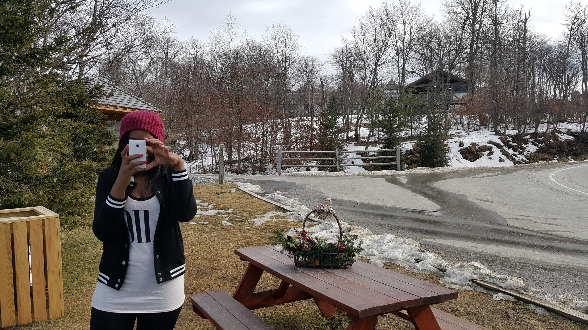

Living My American Dream
Every now and then I am approached by people who ask me how I came to live in America. All I can do is give a shrug and say “For school”. I feel like I need a more detailed answer to that question so I decided to write this piece covering that any many other questions that normally follows after someone has asked the “so how did you ended up here in America?”, Do you like it? Etc.
The irony is my American journey started way before even I knew I would wind up here. I remember when i was growing up, my step mother would jokingly say that I would end up in the U.S. At that time it wasn’t a funny joke to me because I was happy where I was in life and things seemed great. That was during my childhood. After I left and came back to Africa for three years I was unhappy. I saw many loopholes and corrupt practices in the system which prompted my decision to leave my admin job at a private college and leave the country. I had long term career goals that I wanted to accomplish before turning 30 and after several failed attempts in changing my career path I came to a decision to leave everything behind and move to a new country to start over. I started doing my research and I spent a good amount of time every day after work browsing and researching possible countries on the internet. I knew the chances of me failing were higher than of me succeeding. I decided not let my friends or family know about this. However, when I was about to board my plane, I managed to update my Facebook status letting my friends know I was leaving to overseas. I realize it was not the best way but given the circumstance surrounding the situation it worked out well for me.
Choosing to come to America was one of the best decisions I’ve ever made. For someone like me America is one of the best countries in the world to live in at this day and age; it’s progressive, economically stable and embraces diversity. Don’t get me wrong, America has its own shortcomings but what country doesn’t? I came to America in 2012 through a J1 visa. I have grown from a wide-eyed tourist girl to a woman. Although starting life halfway around the globe with no family or friends isn’t easy, it is very rewarding. Being here alone with no family or relatives meant I had only myself to rely on. As mentioned before, I initially came through on a J1 visa and while in America I changed my visa status to F1 and went to college full time. I’ve found that living in a foreign country with no relatives or friends is exciting, it like being given another chance to live life in your own terms and experience things first hand. The whole experience has helped me view life in a different perspective than what I was brought up to. Of course, life isn’t always rainbows and butterflies so I’ve made my own mistakes and learned a great deal from them because that’s how life is sometimes. America is different in many ways to the rest of European, African, and Asian countries I’ve been to and that is what makes life interesting on this side of the pond.